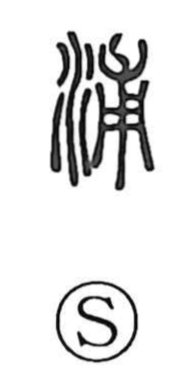

浦

Uncategorized
Kun: ura | On: ho
inlet ・ seashore ・ waterside
Explanation
This is a phono-semantic character with 甫 as its phonetic, giving the On reading ho. Shirakawa notes that 甫 depicts a young tree with its roots, carrying the sense of something enveloped within. The character as a whole denotes the edge of water: as the Shuowen says, the waterside. More specifically, it evokes the rounded recess of a coastline—a creek, inlet, or small bay (ura)—and by extension is also used for the beach or shore and the waterside in general.